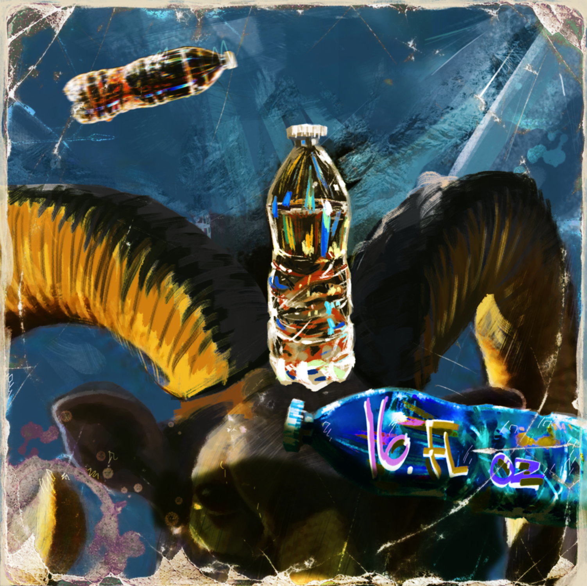

HOMETOWN / OFFICIAL LYRIC TRANSCRIPT
modestly waiting demurely for orders
dadii
I had him stumped at that one!
And crossed my arms and hoped to die
Why did I do it ?
It's all part of my plan
What's my plan?
I plan to be her hands
Whose hands?
The highest and most glorious
the one who's got the plan
For The glorious oneness love and light on high
I try as hard as I might try
I plan to be her hands
Whose hands?
The one that took the light
The one that gave us... Light
It's just like an abandoned child
to go out desperately in search of its mother, clawing and crawling
willing to undo the very nature of existence
if it means a chance of returning to her bosom
Why did I do it ?
It's all part of my plan
What's my plan?
I plan to be her hands
Whose hands?
RECORD NO. MODESTO / CONTENTS SUBJECT TO REVISION